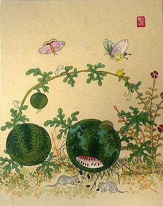

pAIcasso
Introduction/Related Works
Introduction
Our work training this generative art model yields more than original works of art. By displaying an understanding of various styles through its capacity for stylistic mimicry and contextualization of content through caption creation, it gives insights into the potentially arbitrary nature by which society classifies artistic works. Through the generation of artificial two-dimensional works of art and associated captions, we are able to develop a sense of what characteristics of the artwork are intrinsic to that particular style. In addition, the artificial artist produces original works based on a predetermined style and the input image’s content features.
We plan to use multiple neural networks and CycleGAN to generate new images that can be classified as one of the following artistic categories: Impressionism, Cubism, Contemporary, Modern, Abstract, Surrealism, Xieyi, Gongbi, Min-hwa, Mughal, and Kente. Additionally, we will use similar methods to generate captions for each of the generated images. Using CycleGAN allows us to do this without labeled training data and to train on sets of styles, rather than individual artistic works.
Our initial challenge is creating a dataset of images that appropriately aligned with each category with which we could properly train our necessary GAN models – a discriminator model for classification/artificial art detection and a generator model for creation of properly classified art with a relevant name/caption. The dataset is created through scraping the web for images in each of the artistic categories, then checking them by hand to ensure they are appropriate inputs (no repeats, ensure images of art, not photos of exhibits, etc…). Finally, we alter the dimensions of each input to be 256x256 pixels, which speeds up training and keeps everything consistent for our neural network’s sizing values. We utilize three convolutional neural networks for creation, classification, and input-feature decomposition, respectively. Training and tweaking hyperparameters of the classification, input-feature decomposition, and creation models, we check the visual acuity and stylistic applications of the creation model.
In the end, our model creates original works of art that, when judged by humans, were classified as the appropriate style, and as expected, the captions associated with the works indicate an understanding of the content depicted in the work. This shows there are, in fact, relevant consistencies throughout the works in a given style.
Literature Review
The idea of translating photos into works of art with predetermined styles is not a unique problem. The baseline ideas of image generation and style transformation can be applied to a number of other problems, from simply generating a realistic image of a horse, to changing that horse into a realistic zebra. So, as would be expected, there has been much research for solutions and improvement in the area.
Ian Goodfellow was the first to solve the image generation problem, when he and other researchers introduced Generative Adversarial Networks (GANs) in 2014 [1]. Previously, neural networks could be trained to recognize objects and things, but their concept of what that “thing” looked like was far from realistic to the human eye. GANs utilize two neural networks - a generator and a discriminator - which learn together to produce images that are indistinguishable from real photos. Essentially the generator produces an image, and the discriminator determines if it thinks that it is real. Then, both neural networks are updated and in turn have learned more from each other about what might constitute a real vs. fake image. To this day, GANs are some of the best at generating images through neural networks, and have been continuously used to progress solutions to the problems outlined above.
In 2015, Leon Gatys, Alexander Ecker and Matthias Bethge separated style from content in pictures, leading to what is known as Neural Style Transfer. In their paper, they discuss their method for taking two images, and generating a new picture that contains the content of the first in the style of the second. Their loss function was defined to find weights to minimize the loss of style and content separately. The result was many pictures that were clearly in the style of specific paintings, such as The Starry Night by Vincent van Gogh, Der Schrei by Edvard Munch, and Femme nue assise by Pablo Picasso. See [2] for examples.
The work done by [2] was groundbreaking at the time, but it still had its drawbacks. Neural Style Transfer was designed to work between two distinct images, and it could not map entire sets to each other. Pix2Pix [6] became a well-known image-to-image translation tool, but it required large amounts of labeled data, something that is hard to come by for many of the problems outlined above. This is where CycleGAN comes in. CycleGAN [3] was developed by Zhu et al. in an attempt to tackle image-to-image translation without labeled data. They did this by using two GANs, which allowed them to generate realistic images that were also directly mapped to the original image. That is, for an input image in set X they found a function F: X -> Y that translated the input into an image in the set Y. Then, to ensure that the generated image was “from” the input image, they found another function G: Y -> X and transformed it back. The loss function was centered around the difference between the input image and the generated image from function G. This allowed for a neural network to make connections between sets of things without labeled data on which the neural networks could have been trained. [3] provides a number of examples for how CycleGAN can be used, including style transfer in artwork, horses to zebras, and summer to winter landscapes.
Separate from the work we will be doing, it should be mentioned that CycleGAN is not just used for image translation. It is also used by artists to generate new and unique works that are satisfyingly intriguing and not what you might expect. Helena Sarin [4] is one such artist, who uses GANs as her medium. In our exploration of image artwork style translation, we hope to also encounter images that sometimes might not be what we wanted or expected, but are strange, new, and interesting nonetheless.
pAIcasso
Discussion
Introduction
Our work training this generative art model yields more than original works of art. By displaying an understanding of various styles through its capacity for stylistic mimicry and contextualization of content through caption creation, it gives insights into the potentially arbitrary nature by which society classifies artistic works. Through the generation of artificial two-dimensional works of art and associated captions, we are able to develop a sense of what characteristics of the artwork are intrinsic to that particular style. In addition, the artificial artist produces original works based on a predetermined style and the input image’s content features.
We plan to use multiple neural networks to generate new images that can be classified as one of the following artistic categories: Impressionism, Cubism, Contemporary, Modern, Abstract, Surrealism, Xieyi, Gongbi, Min-hwa, Mughal, and Kente. Additionally, we will use similar methods to generate captions for each of the generated images.
Our initial challenge is creating a dataset of images that appropriately aligned with each category with which we could properly train our necessary GAN models – a discriminator model for classification/artificial art detection and a generator model for creation of properly classified art with a relevant name/caption. The dataset is created through scraping the web for images in each of the artistic categories, then checking them by hand to ensure they are appropriate inputs (no repeats, ensure images of art, not photos of exhibits, etc…). Finally, we alter the dimensions of each input to be 256x256 pixels, which speeds up training and keeps everything consistent for our neural network’s sizing values. We utilize three convolutional neural networks for creation, classification, and input-feature decomposition, respectively. Training and tweaking hyperparameters of the classification, input-feature decomposition, and creation models, we check the visual acuity and stylistic applications of the creation model.
In the end, our model creates original works of art that, when judged by humans, were classified as the appropriate style, and as expected, the captions associated with the works indicate an understanding of the content depicted in the work. This shows there are, in fact, relevant consistencies throughout the works in a given style.
Literature Review
The idea of translating photos into works of art with predetermined styles is not a unique problem. The baseline ideas of image generation and style transformation can be applied to a number of other problems, from simply generating a realistic image of a horse, to changing that horse into a realistic zebra. So, as would be expected, there has been much research for solutions and improvement in the area.
Ian Goodfellow was the first to solve the image generation problem, when he and other researchers introduced Generative Adversarial Networks (GANs) in 2014 [1]. Previously, neural networks could be trained to recognize objects and things, but their concept of what that “thing” looked like was far from realistic to the human eye. GANs utilize two neural networks - a generator and a discriminator - which learn together to produce images that are indistinguishable from real photos. Essentially the generator produces an image, and the discriminator determines if it thinks that it is real. Then, both neural networks are updated and in turn have learned more from each other about what might constitute a real vs. fake image. To this day, GANs are some of the best at generating images through neural networks, and have been continuously used to progress solutions to the problems outlined above.
In 2015, Leon Gatys, Alexander Ecker and Matthias Bethge separated style from content in pictures, leading to what is known as Neural Style Transfer. In their paper, they discuss their method for taking two images, and generating a new picture that contains the content of the first in the style of the second. Their loss function was defined to find weights to minimize the loss of style and content separately. The result was many pictures that were clearly in the style of specific paintings, such as The Starry Night by Vincent van Gogh, Der Schrei by Edvard Munch, and Femme nue assise by Pablo Picasso. See [2] for examples.
The work done by [2] was groundbreaking at the time, but it still had its drawbacks. Neural Style Transfer was designed to work between two distinct images, and it could not map entire sets to each other. Pix2Pix [6] became a well-known image-to-image translation tool, but it required large amounts of labeled data, something that is hard to come by for many of the problems outlined above. This is where CycleGAN comes in. CycleGAN [3] was developed by Zhu et al. in an attempt to tackle image-to-image translation without labeled data. They did this by using two GANs, which allowed them to generate realistic images that were also directly mapped to the original image. That is, for an input image in set X they found a function F: X -> Y that translated the input into an image in the set Y. Then, to ensure that the generated image was “from” the input image, they found another function G: Y -> X and transformed it back. The loss function was centered around the difference between the input image and the generated image from function G. This allowed for a neural network to make connections between sets of things without labeled data on which the neural networks could have been trained. [3] provides a number of examples for how CycleGAN can be used, including style transfer in artwork, horses to zebras, and summer to winter landscapes.
Separate from the work we will be doing, it should be mentioned that CycleGAN is not just used for image translation. It is also used by artists to generate new and unique works that are satisfyingly intriguing and not what you might expect. Helena Sarin [4] is one such artist, who uses GANs as her medium. In our exploration of image artwork style translation, we hope to also encounter images that sometimes might not be what we wanted or expected, but are strange, new, and interesting nonetheless.
Methods Outline
To create our neural network and analyze its performance, we will use a variety of tools for implementation, training and analysis. Doing so will allow us to create an implementation of CycleGAN specific to our project.
We will use Pytorch and Jupyter notebooks to do most construction of the model, which will have attributes similar to the repository found at https://github.com/aitorzip/PyTorch-CycleGAN.
After building the network, we will train on our own dataset of images collected from the Bing API and consisting of 11 categories: Impressionism, Cubism, Contemporary, Modern, Abstract, Surrealism, Xieyi, Gongbi, Min-hwa, Mughal, and Kente.
Each category had just under 300 images before cleaning; this number ranges from 200-275 after cleaning, and will be closer to 200 for the actual training of each category.
For an analysis of the CycleGAN we create, we will use matplotlib to graph and analyze the accuracy and values obtained from our Minimax Loss function. This form of loss function is standard for GAN problems, providing simplicity and proven to work in practice.
This will give us insight into parameters that can be manually changed to improve performance, and the general effectiveness of our neural network’s purposes.
Discussion Outline
Evaluating the performance of our model is relatively straightforward. We simply want to see how many fake/generated images classify as real/authentic works of art. Though this method sounds good in practice, it could ultimately be skewed by the generator model developing at a faster pace than the discriminator model. Since the goal is to make a model that can produce art in a given style, the similarity of the art pieces can also be determined by eye. That said, we continued to monitor the accuracy of images that are classified as real or fake to ensure that on epochs where the discriminator is backpropagated, it gets better over time, and on epochs where the generator is backpropagated the classifier gets worse.
By evaluating these patterns on a per epoch basis we can also distinguish which/if one model is progressing significantly faster than the other, allowing us to determine if the learning rate of a given model could be reduced. Similarly, by comparing images generated to those from our dataset, we could visually evaluate the similarity to the dataset and consistency between generated images.
Relative to other similar work in the discipline, our images are produced without an emphasis on adding style to a context image with neural style transfer, rather the creation of a generic image that falls within a stylistic discipline.
It is important to understand the implications of this tool. Firstly there is the question of whether our AI is merely a tool for us to create, or if we would be wrongly taking credit for its work.
Finally, there are ethical implications to the art created by a machine that attributes no meaning to it. One of the styles we looked into was Kente, which is often produced on textiles and often attributes meaning to different colors and patterns. Understanding this, even if replicated well, it seems unethical to truly consider the work as Kente if its creator does not understand nor acknowledge the meanings of the components that create this style.
pAIcasso Rough Draft
Abstract
In this paper, we attempted to create a GAN that takes in a target art style and random input and outputs a 256x256 pixel image in that target art style. Through incremental development, we create a discriminator model and generator model taking concepts of Neural Style Transfer and Deep Convolutional General Adversarial Networks (DCGANs) in an attempt to make an neural network artist. Ultimately, the project did not work as the images produced by the final generator do not resemble art in the target style. Looking forward, we suggest attempting a similar project with fewer styles, as the ambition of this project makes it difficult to specify the exact issue that limits the training of the generator and discriminator.
Introduction
Our work training this generative art model attempts to yield more than original works of art. By displaying an understanding of various styles through its capacity for stylistic mimicry, it tries to give insights into the potentially arbitrary nature by which society classifies artistic works. Through the generation of artificial two-dimensional works of art, we tried to develop a sense of what characteristics of the artwork are intrinsic to that particular style. In addition, the artificial artist attempts to produce original works based on a predetermined style and randomized input noise.
With a DCGAN [1] , we use multiple neural networks to generate new images that can be classified as one of the following artistic categories: Impressionism, Cubism, Contemporary, Modern, Abstract, Surrealism, Xieyi, Gongbi, Min-hwa, Mughal, and Kente. The initial challenge was creating a dataset of images that appropriately aligned with each category, with which we could properly train our necessary GAN models – a discriminator model for classification/artificial art detection and a generator model for creation of properly classified art. The dataset is created through scraping the web for images in each of the artistic categories, then checking them by hand to ensure they are appropriate inputs (no repeats, ensure images are of art, not photos of exhibits, etc…). Finally, we alter the dimensions of each input to be 256x256 pixels through resizing and randomized crop transforms, keeping everything consistent for our neural network’s sizing values. We utilize two convolutional neural networks, one for art creation and the other for art classification. Training and tweaking hyperparameters of the classification and creation models, we check the visual acuity and stylistic applications of the creation model.
| Abstract |
Contemporary |
Cubism |
Gongbi |
|
 |
|
|
| Impressionist |
Kente |
Min-hwa |
Modern |
|
|
 |
|
| Mughal |
Surrealist |
Xieyi |
|
 |
|
As it stands our model does not create original works of art that, when judged by humans, can be classified as the target style. Though there are colors and patterns present, they do not appropriately match intended targets nor any generalized art form. Regardless of the relevant consistencies one may expect to find in the works of a given style, our generator does not emulate them. That said, our discriminator, when trained outside of the GAN, has the capacity for feature recognition.
Literature Review
Though generic GANs have been seen commonly in discipline, we often find style analysis in neural networks being applied to neural style transfer. The idea of translating photos into works of art with predetermined styles is not a unique problem. The baseline ideas of image generation and style transformation can be applied to a number of other problems, from simply generating a realistic image of a horse, to changing that horse into a realistic zebra. So, as would be expected, there has been much research for solutions and improvement in the area.
Ian Goodfellow was the first to solve the image generation problem, when he and other researchers introduced Generative Adversarial Networks (GANs) in 2014 [2]. Previously, neural networks could be trained to recognize objects and things, but their concept of what that “thing” looked like was far from realistic to the human eye. GANs utilize two neural networks - a generator and a discriminator - which learn together to produce images that are indistinguishable from real photos. Essentially the generator produces an image, and the discriminator determines if it thinks that it is real. Then, both neural networks are updated and in turn have learned more from each other about what might constitute a real vs. fake image. To this day, GANs are some of the best at generating images through neural networks, and have been continuously used to progress solutions to the problems outlined above.
In 2015, Leon Gatys, Alexander Ecker and Matthias Bethge separated style from content in pictures, leading to what is known as Neural Style Transfer. In their paper, they discuss their method for taking two images, and generating a new picture that contains the content of the first in the style of the second. Their loss function was defined to find weights to minimize the loss of style and content separately. The result was many pictures that were clearly in the style of specific paintings, such as The Starry Night by Vincent van Gogh, Der Schrei by Edvard Munch, and Femme nue assise by Pablo Picasso. See [3] for examples.
The work done by [3] was groundbreaking at the time, but it still had its drawbacks. Neural Style Transfer was designed to work between two distinct images, and it could not map entire sets to each other. Pix2Pix [4] became a well-known image-to-image translation tool, but it required large amounts of labeled data, something that is hard to come by for many of the problems outlined above. This is where CycleGAN comes in. CycleGAN [5] was developed by Zhu et al. in an attempt to tackle image-to-image translation without labeled data. They did this by using two GANs, which allowed them to generate realistic images that were also directly mapped to the original image. That is, for an input image in set X they found a function F: X -> Y that translated the input into an image in the set Y. Then, to ensure that the generated image was “from” the input image, they found another function G: Y -> X and transformed it back. The loss function was centered around the difference between the input image and the generated image from function G. This allowed for a neural network to make connections between sets of things without labeled data on which the neural networks could have been trained. [5] provides a number of examples for how CycleGAN can be used, including style transfer in artwork, horses to zebras, and summer to winter landscapes.
Our work will be a variation of a GAN, where we use a singular generator to create images and a singular discriminator with 12 different potential categories. Our GAN’s design differs from many works, because we are interested in specifying the style of artwork through the input that is given to the generator. Further, the loss in our system is calculated between different sets of labels from the generator to the discriminator.
Separate from the work we will be doing, it should be mentioned that CycleGAN is not just used for image translation. It is also used by artists to generate new and unique works that are satisfyingly intriguing and not what you might expect. Helena Sarin [4] is one such artist, who uses GANs as her medium. In our exploration of image artwork style translation, we hope to also encounter images that sometimes might not be what we wanted or expected, but are strange, new, and interesting nonetheless.
Methods
To create our neural network and analyze its performance, we use a variety of tools for implementation, training and analysis. We use Pytorch and Jupyter notebooks to do most construction of the model, utilizing some previously positive concepts and GAN implementations such as DCGAN. In order to train the network we created a dataset of images collected from the Bing image scraping package and consisting of 11 categories: Impressionism, Cubism, Contemporary, Modern, Abstract, Surrealism, Xieyi, Gongbi, Min-hwa, Mughal, and Kente. Each category originally had 300 images before cleaning; this number ranges from 79-266 after cleaning. This cleaning process consisted of removing duplicates picked up in the dataset as well as pictures of exhibits/non-art artwork. After applying numerous tranfroms to the dataset, we ultimately had a dataset of 18,996 training images and 8,136 validation images. These transforms consisted of a transform to make the shortest side of the image 256 pixels, a random resized crop to crop out a 256x256 square, and a random horizontal flip with a 45% probability of flipping. These transforms are all beneficial in getting the proper size, expanding the dataset, and keeping style consistent, not altering perspectives or colors.
Since a GAN utilizes two models, we first created a discriminator model. Without the corresponding generator model, the job of the discriminator was simply to categorize art from our dataset. Through the categorization of this art, we tweaked the architecture of the Convolutional Neural Network by adding layers, changing the pooling methods, and tweaking the learning rate (among other things). We continued this process until we felt that, given our small set of epochs to train on and batch size of 32 images, our classifier was adequately prepared to detect stylistic features and fake art when trained alongside the generator in the GAN.
Next we implemented the generator model. This model utilized transposed convolutions to turn a small input of random inputs and a target style into a larger image fitting the input dimensions required by the discriminator: 3x256x256. Our generator model was unique to other works, because we included an initial linear layer before implementing seven convolutional layers. This linear layer was responsible for detecting the art style that was specified with the input data that was given. We did so by creating an input of random noise with size [batch_size, 100, 1, 1], and then appending the “style number” to the 100 pieces of noise. The linear layer took an input of [batch_size, 101] and returned [batch_size, 100], with which we could unsqueeze to [batch_size, 100, 1, 1] and feed into our convolutional layers. As stated before, there were seven convolutional layers that were then responsible for detecting features specific to each style of art. The results were colored images of size 256x256.
The third step in our process was to train the discriminator and the generator in conjunction to improve upon both of their performances. This was done with the following steps for each epoch in batches:
- Generate fake artwork and label them accordingly.
- Feed the real and fake art into the discriminator, and compare the output to the real labels.
- Calculate the loss between the real labels and the output, and update the discriminator’s parameters.
- Generate more fake artwork and save the target art styles as a separate tensor.
- Feed the fake artwork into the discriminator and get the output for the new fake artwork.
- Compare the output to the target art styles, calculate the loss, and update the generator’s parameters
Note that this process required defining two separate loss functions – one for the discriminator and one for the generator. The discriminator compares the actual labels (including the “fake” label) and the output to improve upon its classifications. The generator compares the target labels (not including “fake”) and the output to improve the images that it generates. So, both neural networks are updated in regards to their objectives. Training the GAN was done in two cycles, one with 15 epochs and the other with 300. This was to give us an idea on the accuracy and effectiveness of epochs in training, and to hopefully produce more realistic-looking images.
Finally, analysis of the accuracy and values obtained from our Minimax Loss function was done by using matplotlib and Excel. Each epoch in training allowed us to see the loss for the discriminator and the generator. This was closely monitored to view any patterns or anomalies. The validation set yielded the accuracies of both the discriminator and the generator overall and for each type of work. We also created a confusion matrix for our validation set that allowed us to view the ratio of images that were classified as a certain type, given their actual label. The combination of these three pieces of information gives us insight into our neural network, its training, tendencies, and drawbacks, all of which are displayed below. Finally, using matplotlib, we generated and displayed images from each art style to see their distinguishability, key features, and similarities. Our goal for success in this project was to have these pictures be recognizable as a specific art style by the human eye, and everything done in this process was a deliberate choice with that goal in mind.
Results
First, we look at the quality of our discriminator. As seen in Figure 1 (below), after training over 15 epochs, we see that loss saw a consistent decline as the model progressed. Worried about potential overfitting that could keep the discriminator from recognizing any images not in the dataset, we utilized the validation dataset to determine how successful general classification was in the model.
Above, we see the curve steadily declining while slowly becoming more constant. Relative to previous runs of the discriminator model in classification tests, the final discriminator model design of seven convolutional layers and three linear layers (utilizing dropout) with a learning rate of .001 yielded the highest validation accuraty. Given the growth of accuracy and continued decline in loss, we set it up for use in training the GAN. That said, the highest accuracy categories in this set share one key feature. They are non-Western art forms. This could indicate strong similarity between the Western styles making them more difficult to distinguish relative to the other categories. We test this stylistic similarity hypothesis by utilizing a confusion matrix (Figure 2). The confusion matrix does show a pattern of confusion between Western art styles more than confusion between/with non-Western styles. That is, many of the western styles are mistaken for others more often than other non-Western styles.
We began by doing small tests of our GAN. While we were initially worried about overfitting when the discriminator is placed in the GAN, we saw from the validation set that the accuracy (Figure 3) of the discriminator was approximately where we got it to while tuning it’s parameters during classification (the highest accuracy reached by solely the discriminator was 52.24% after 15 epochs). We also see below that the generator improved steadily in 15 epochs, with some art classes being at or close to 100%. After running on 15 epochs, we did not expect the generated images to be very representative of any of the styles. Figure 4 shows the images generated after 15 epochs for three different styles. Clearly, they are not distinguishable by the human eye, but the discriminator was able to classify one out of three of these sample images correctly.
Clearly, 15 epochs are not enough to produce realistic works of art. Our next step was training with 300 epochs and comparing the differences. Though a number of GANs with smaller dimensions and less catogories of classification rely on fewer epochs, the severe lack of growth from our first 15 epochs promoted a shift to a far higher epoch count. Running this higher-epoch training loop, we see that the discriminator and generator improve quickly and then their loss levels out. However, that change looks much more drastic with 300 epochs. Figure 5 also shows that the discriminator starts off strong with a loss of less than half of the generator’s utilizing the same cross entropy loss function for both, but our generator quickly bridges the gap and significantly decreases its loss. Fewer epochs yields a closer loss between the discriminator and the generator, but less complex images.

We can also clearly see that despite the total loss dropping significantly for both the discriminator and the generator, the accuracy of the two are quite different (Figure 6). The generator is at 97.69% accuracy, while the discriminator is at 18.41%. We see that the discriminator classified almost no works as “fake,” leading to the hypotheses that each image contains more information than the human eye can see and the generator was able to find some type of shortcut. Figure 7 shows the generated images after 300 epochs, and although they seem to be more complex than the ones after 15 epochs, their target styles are still indistinguishable by looking alone.
These images were all classified correctly, despite them looking just as similar as the ones before. There is the development of color and texture patterns, but there are none that are able to clearly identify a discrete style. Finally, we look at the confusion matrix on the validation set after 300 epochs (Figure 8). This shows us that the discriminator predicted Cubist Art most frequently, and almost never predicted Fake art. Additionally, there were certain categories that the discriminator was very adept at distinguishing such as Xieyi Art and Cubist Art. A final statistic to take note of is that the predictions across categories for actual fake art were fairly consistent. This means that the fake art generated was never labeled as one or a few categories, and it was generally good at fooling the discriminator into thinking that it was the style the generator was attempting to emulate.
Discussion
Evaluating the performance of our model requires relatively straightforward metrics. We simply want to see how many fake/generated images classify as real/authentic works of art. Though this method sounds good in practice, it could ultimately be skewed by the generator model developing at a faster pace than the discriminator model. Since the goal is to make a model that can produce art in a given style, the similarity of the art pieces can also be determined by eye. That said, we continue to monitor the accuracy of images that are classified as real or fake to ensure that on epochs where the discriminator parameters are updated, it gets better over time, and on epochs where the generator parameters are updated the classifier gets worse.
By evaluating these patterns on a per epoch basis we can also distinguish which/if one model is progressing significantly faster than the other. Similarly, by comparing images generated to those from our dataset, we could visually evaluate the similarity to the dataset and consistency between generated images.
Relative to other similar work in the discipline, our images are produced without an emphasis on adding style to a context image with neural style transfer, rather the creation of a generic image that falls within a stylistic discipline. Though our outputs are generic, they do not fit any of the attempted styles particularly well.
One reason for the errors of our GAN may be discrepancies in the pace of learning such that the generator was outpacing the disciminator. Due to the very high accuracy of the generator and the low accuracy of the discriminator, it appears the generator was being validated by an incorrect discriminator which was learning at a far slower pace. This discrepancy in development is also apparent in the changes in loss per epoch. In addition, this validation can be seen in the GAN confusion matrix where we see a relatively uniform distribution of predictions by the discriminator for the various styles, which is exactly what the generator would consider a success, given the random value used to decide the generator’s target style is uniformly distributed.
Though there is this clear discrepancy in development between the two models, it could also be speculated that early on, the generator found some way to “cheat” the discriminator. Evidence for this can be seen in the significantly worse accuracy of the discriminator when trained with the generator than the discriminator trained without the discriminator as well as the large and sudden progress of the generator early on in the training process.
Looking forward, we think it would be important to run tests varying hyperparameters rather than the architecture of the models that fit into the GAN. Whether this comes in the form of making the generator learning rate a fraction of the discriminator learning rate, or updating the discriminator more frequently relative to how often we update the generator (ie updating the discriminator for more batches than the generator). One of these would lower the pace of learning of the generator relative to the discriminator, likely to keep them more in pace, while the other would allow the discriminator to better keep track of how the generator may be working to trick it beyond trying to emulate the appropriate art form. Following this, we believe the field of GAN’s and art generation in general could continue trying to create work of particular styles one at a time rather than using an “all-in-one” GAN. This would be similar to how neural style transfer emulates the style of one work and remodels a context image after it, but we still hope this stylistic understanding could be done without the context image, making the work truly unique.
That said, it is important to consider the implications of this tool. Firstly there is the question of whether our AI is merely a tool for us to create, or if we would be wrongly taking credit for its work. In addition, would how closely it chooses to emulate the works it is trained on could raise issues of plagiarism, which, whether or not it is intended, could set a poor precedent for future use of similar tools/allow for a creator who does take credit for the AI’s art to avoid accountability for such plagiarism. In the end, if we treat the AI as a creator rather than a tool, it detaches accountability from the AI’s creator for the potentially wrongful actions of the AI. In addition, there are ethical implications to the art created by a machine that attributes no meaning to it. One of the styles we looked into was Kente, an art form from Ghana that is produced on textiles and which traditionally attributes meaning to different colors and patterns. Understanding this, we believe that even if the style is replicated well, it seems unethical to truly consider the work as Kente if its creator does not understand nor acknowledge the meanings of the components that create this style. This applies to both the AI and the AI’s creator. In this sense, consideration of pAIcasso’s work as authentic Kente would be an egregious misclassification. Finally, there are considerations for the effect of easily produced original art on small businesses and artists. Because artists put thought, time, and effort into their work, overproduction of art through a technological medium could hurt independent creators who can’t keep up with the expedited mechanical production. In other words, this tool, if done properly (or in a way, improperly), has the potential to negatively impact artistic accountability, cultural respect, and economic harm to independent artists.